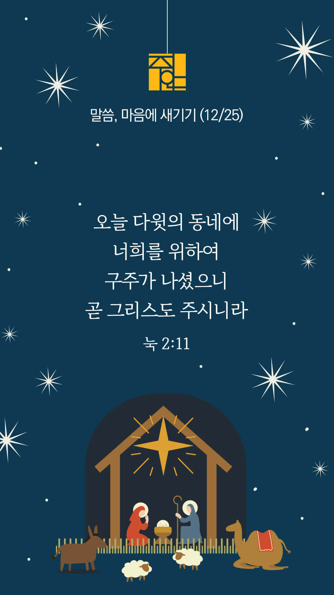

기도실 안내
2022년 12월 25일 (주일)
- 온라인 기도실은 온 회중이 함께 주님 앞으로 나아가는 자리입니다.
- 30분 정도 여유를 가지고 하시기 바랍니다.
- 말씀과 묵상, 찬양과 기도로 나아갑니다.
- 배경 음악이 나올 수 있습니다 볼륨을 조절해주세요.
준비가 되셨으면 아래의 버튼을 눌러주세요.
할렐루야
내 영혼아 여호와를 찬양하라
시 146:1
- 먼저 찬양의 가사를 천천히 읽어 봅시다.
은혜
내가 누려왔던 모든 것들이
내가 지나왔던 모든 시간이
내가 걸어왔던 모든 순간이
당연한것 아니라 은혜였소
아침해가 뜨고 저녁의 노을
봄의 꽃향기와 가을의 열매
변하는 계절의 모든 순간이
당연한것 아니라 은혜였소
할렐루야
내 영혼아 여호와를 찬양하라
시 146:1
- 먼저 찬양의 가사를 천천히 읽어 봅시다.
아침해가 뜨고 저녁의 노을
봄의 꽃향기와 가을의 열매
변하는 계절에 모든 순간이
당연한것 아니라 은혜였소
내가 이 땅에 태어나 사는 것
어린이 시절과 지금까지
숨을 쉬며 살며 꿈을 꾸는 삶
당연한 것 아니라 은혜였소
할렐루야
내 영혼아 여호와를 찬양하라
시 146:1
- 먼저 찬양의 가사를 천천히 읽어 봅시다.
내가 하나님의 자녀로 살며
오늘 찬양하고 예배 하는 삶
복음을 전할수 있는 축복이
당연한것 아니라 은혜였소
모든것이 은혜 은혜 은혜
한없는 은혜
내 삶의 당연한 것 하나도
없었던 것을 모든 것이
은혜 은혜 은혜였소
할렐루야
내 영혼아 여호와를 찬양하라
시 146:1
은혜 by 손경민
위의 찬양이 끝나면 말씀읽기를 눌러주시면 됩니다.
주의 말씀은 내 발에 등이요
내 길에 빛이니이다 (시119:105)
오늘의 말씀입니다.
음악 소리가 크면 조절하시기 바랍니다.

마음의 묵상
눅 2:11
“오늘 다윗의 동네에 너희를 위하여 구주가 나셨으니 곧 그리스도 주시니라”
1. 예수님이 구주이심을 진심으로 믿으시나요?
2. 주님께서 당신과 함께 하심을 신뢰하시나요?
3. “저의 구주이신 주님, 늘 저와 함께 해주소서” 간절히 기도합시다.
구주께서 나셨습니다.
회개, 삶의 방향을 바꾸는 결정
아버지 하나님의 긍휼하심을 바라봅니다.
“긍휼이 풍성하신 하나님이
우리를 사랑하신
그 큰 사랑을 인하여”
- 에베소서 2:4 -
3분 정도 회개하며 주님 앞에 나아갑니다
사슴이 시냇물을 찾기에 갈급함 같이
시 42:1
- 다음의 말씀을 소리 내어 읽습니다.
[에베소서 2장 8-10절]
8 너희는 그 은혜에 의하여 믿음으로 말미암아 구원을 받았으니 이것은 너희에게서 난 것이 아니요 하나님의 선물이라
9 행위에서 난 것이 아니니 이는 누구든지 자랑하지 못하게 함이라
10 우리는 그가 만드신 바라 그리스도 예수 안에서 선한 일을 위하여 지으심을 받은 자니 이 일은 하나님이 전에 예비하사 우리로 그 가운데서 행하게 하려 하심이니라
하나님 나라
1. 하나님의 나라가 속히 이 땅에 임하게 하소서
하나님 아버지,
주님을 믿는다는 이유 하나로 핍박을 당하고 힘겹게 믿음을 지키고 있는 형제 자매들을 보호하여 주소서. 생명의 위협 속에서도 주님의 임재가 충만히 임하게 하시고, 그들을 둘러싼 환경과 억압이 평안해지도록 인도하여주소서. 이 땅에 오신 예수님의 복된 소식이 그 땅과 온 세계 땅 끝까지 전해지게 하소서.
간절한 마음으로 3분 정도 기도합시다
남과 북
2. 남북한이 속히 복음으로 통일되게 하소서
하나님 아버지,
북한의 핵과 미사일이 무용지물이 되게 하시고, 참된 힘과 능력은 오직 주님께만 있음을 북한의 위정자들과 모든 주민들이 알게 하소서. 예수님 탄생의 기쁜 소식이 북한 곳곳에 전파되게 하시고, 이를 위해 애쓰는 모든 기관과 사역자들과 선교사님들에게 힘과 능력을 더하여주소서.
간절한 마음으로 3분 정도 기도합시다
대한민국
3. 우리나라가 하나님을 경외하는 나라가 되게 하소서
하나님 아버지,
길어지는 한파로 추위에 고통받고 있는 이들을 긍휼히 여겨주시고 보호하여 주소서. 그들을 위한 나라의 정책과 법이 잘 보완되어서 추위로 어려움을 겪는 많은 사람들이 따듯한 곳에서 겨울을 보내게 하소서. 이 땅의 성도들이 주위의 작은 자들을 잊지 않고 따뜻한 손길을 내밀어 우리나라가 주님의 사랑으로 풍성해지게 하소서.
간절한 마음으로 3분 정도 기도합시다
한국 교회
4. 한국교회가 성령으로 새롭게 부흥되게 하소서
하나님 아버지,
한국교회의 모든 구역과 공동체가 예수님 탄생의 기쁜 소식을 서로 나누며 사랑하고 섬기며 중보하는 주님의 몸된 공동체가 되게 하소서. 공동체를 이끌어가는 리더들에게 예수님의 마음을 더하여 주시고, 성령으로 충만케 하여주셔서 그들을 통하여 모든 공동체가 더욱 더 든든히 서 나가게 하소서.
간절한 마음으로 3분 정도 기도합시다
주안교회
5. 주안교회가 선교적 삶으로 복음의 빛을 비추는 교회가 되게 하소서
우리의 화평이신 하나님,
하나님과 원수되었던 우리를 예수님의 십자가를 통하여 하나님과 화목한 자로 불러주심을 감사합니다. 바라옵기는 이제 우리 주안의 성도들이 주님의 은혜로 하나님과 화목케 된 자로서 세상에 나가 화목하게 하는 직분, 즉 우리 안에 있는 모든 종류의 담을 무너뜨리는 선교적 삶을 살게 하여 주옵소서.
간절한 마음으로 3분 정도 기도합시다
감사의 기도
- 오늘 기도를 인도하신 주님께 감사를 올려드립니다.
- 아래의 구절을 읽고 주님께 감사의 마음을 올려드립시다.
“그는 허물과 죄로 죽었던
너희를 살리셨도다”
- 에베소서 2장 1절 -
고요한 가운데 잠시 침묵하시기 바랍니다.
파송, 세상을 향하여
- 오늘의 온라인 기도를 마쳤습니다.
기도를 들으신 주님께서 평안히 가라 하십니다.
주님께서 우리와 함께 하시니 두려울 것이 없습니다.
새벽을 깨우며
- 새벽기도회 안내입니다.